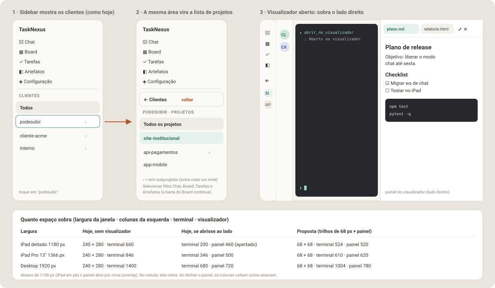

Parte 8 de 8
Parte 8 — Planejamento da Fase N: cliente → projeto na sidebar e espaço para o visualizador
O pedido: liberar espaço no desktop e no tablet. Ao selecionar um cliente, a própria lista de clientes vira a lista de projetos desse cliente, com uma seta ou botão para voltar à lista de clientes. Com isso sobra espaço no lado direito para abrir o visualizador de arquivos (o "dropdown" da Fase V).
É uma mudança pequena e localizada em cima do layout v2 atual: a sidebar continua onde está, com a mesma largura e o mesmo visual. Muda o conteúdo da seção de clientes e o que acontece com as colunas quando o visualizador abre.

8.1 Situação atual (medida no código)
| Coluna | Componente | Largura | O que tem |
|---|---|---|---|
| Sidebar | SidebarV2.jsx + ClienteList.jsx |
240 px (68 px recolhida) | menu (Chat, Board, Tarefas, Configuração) + "Clientes" (Todos + clientes) |
| Lista de chats | ChatSidebarV2.jsx + ChatList.jsx |
280 px (68 px recolhida) | conversas do cliente selecionado |
| Conteúdo | ChatV2.jsx (terminal), BoardV2, TarefasV2… |
o resto | no Board e em Tarefas há ainda uma barra de selects Cliente/Projeto (ClienteProjetoFilterBar) |
Problemas:
- Projeto não tem lugar na navegação. Só existe como select na barra do Board/Tarefas, que come uma faixa de ~45 px de altura, e o Chat não filtra por projeto (mostra "Raiz" ou o subprojeto em cada linha).
- Não há espaço para um painel à direita. Num iPad deitado (1180 px), 240 + 280 px deixam 660 px para o terminal. Abrir um visualizador ao lado deixaria ~200 px de terminal.
8.2 A proposta
8.2.1 Cliente → projeto na mesma área (drill-down)
- Nível Clientes (como hoje): "Todos" + clientes. Clientes que têm subprojetos mostram › à direita.
- Tocar num cliente com subprojetos: a seção inteira troca para o
nível Projetos daquele cliente, com animação curta de deslizar
(respeita
prefers-reduced-motion). Tocar num cliente sem subprojetos só o seleciona, como hoje. - Nível Projetos:
- botão ← Clientes no topo (altura 44 px, largura toda);
- rótulo
PODESUBIR · PROJETOS; - Todos os projetos (= cliente inteiro, igual a selecionar o cliente hoje); - Raiz (só se a pasta do cliente for elegível para chat,elegivel: true); - os projetos filhos diretos, em ordem alfabética; os que têm filhos mostram › e entram mais um nível: o rótulo viraAPI-PAGAMENTOS · PROJETOSe o botão de voltar nomeia para onde ele leva, ← podesubir (o pai), no mesmo padrão de ← Clientes. (Implementação: o texto original dizia "← api-pagamentos"; ver 8.7.) - Selecionar um projeto filtra todas as telas: lista de chats, Board, Tarefas e Artefatos.
- A barra de selects continua no Board, em Tarefas e em Artefatos
(decisão do Bruno: "no board ainda tem que ter, principalmente quando
estiver em Todos"). Ela passa a partir da seleção da sidebar e continua
sendo um refinamento local da tela, como já é hoje no
useClienteProjetoFilter:
| Sidebar | Barra de selects na tela | O que a barra muda |
|---|---|---|
| Todos | select de Cliente + select de Projeto (igual a hoje) | só a tela atual; o chat e a sidebar não mudam |
| Cliente (Todos os projetos) | select de Projeto do cliente (igual a hoje) | só a tela atual |
| Projeto escolhido | select de Projeto já preenchido com ele (mostra também os subprojetos) | só a tela atual |
Sempre que a seleção da sidebar muda, a barra volta a acompanhá-la
(o refinamento local é descartado). Assim a sidebar é a base e a barra
serve para olhar outro cliente/projeto no Board sem perder o contexto do chat.
6. Sidebar recolhida (68 px): no nível Projetos, o primeiro item é um
botão "←" e os projetos aparecem como avatares com iniciais (mesmo
.v2-cliente-avatar), com o nome no title. "Todos os projetos" usa o
glyph ✱ (o mesmo do "Todos") e "Raiz" usa ⌂.
7. Celular: o MobileMenuScreen usa o mesmo ClienteList (variante
mobile), então ganha o mesmo comportamento, com linhas de 54 px (o botão
de voltar também tem 54 px no celular). Entrar num cliente ou projeto com
filhos mantém o menu na tela; escolher um projeto segue o caminho do toque
num cliente (modal de chats na aba Chat, conteúdo direto nas outras).
8. Memória: cliente, projeto e nível ficam salvos em localStorage
(escritorio::v2_nav_scope). Recarregar a página volta para o mesmo lugar.
8.2.2 Espaço à direita para o visualizador
- O visualizador da Fase V passa a abrir como painel à direita (é o "dropdown", só que ancorado na lateral). Continua saindo do botão Visualizador do cabeçalho, com abas, ⤢ Tela cheia e ✕ Fechar.
- Tela larga (≥ 1100 px: iPad deitado e desktop): o painel fica encaixado (o terminal encolhe, nada fica por baixo), e a sidebar e a lista de chats viram trilhos de 68 px automaticamente enquanto ele estiver aberto. Ao fechar, elas voltam exatamente como estavam.
- 641–1099 px (iPad em pé, Split View): o painel abre por cima (overlay), sem recolher nada.
- ≤ 640 px (celular): tela cheia, como já planejado.
- Largura do painel encaixado:
clamp(420px, 42vw, 780px).
| Largura da janela | Hoje, sem visualizador | Se abrisse ao lado hoje | Proposta |
|---|---|---|---|
| iPad deitado 1180 px | 240 + 280 · terminal 660 | terminal 200 · painel 460 | 68 + 68 · terminal 524 · painel 520 |
| iPad Pro 13" 1366 px | 240 + 280 · terminal 846 | terminal 346 · painel 500 | 68 + 68 · terminal 610 · painel 620 |
| Desktop 1920 px | 240 + 280 · terminal 1400 | terminal 680 · painel 720 | 68 + 68 · terminal 1004 · painel 780 |
8.2.3 Decisões fechadas com o Bruno
| Ponto | Decisão |
|---|---|
| Barra de selects Cliente/Projeto | Continua no Board (principalmente em "Todos"), em Tarefas e em Artefatos, partindo da seleção da sidebar e agindo só na tela (item 5 acima) |
| Cliente sem subprojetos | Só seleciona, não abre o nível Projetos |
| Recolher as colunas ao abrir o visualizador | "O que for melhor em usabilidade" → regra da seção 8.2.4 |
| Visualizador no chat | Painel à direita (substitui o dropdown ancorado no botão da Fase V) |
8.2.4 Regra de recolhimento (escolhida pela usabilidade)
- Tela larga (≥ 1100 px): ao abrir o visualizador, a sidebar e a lista de chats recolhem sozinhas para trilhos de 68 px, com a mesma transição de 180 ms de hoje. Motivo: quem abre um arquivo quer ler, e os trilhos mantêm a navegação a um toque (avatares de projetos e de chats).
- Seu controle vale mais: com o painel aberto, os botões de recolher continuam funcionando. Se você expandir uma coluna, ela fica expandida enquanto o painel estiver aberto (o terminal ou a lista encolhem, e o painel mantém a largura mínima de 420 px).
- Ao fechar o painel, tudo volta exatamente como estava antes de abrir.
A preferência salva (
localStorage) nunca é alterada pelo recolhimento automático. - Tela média (641–1099 px) e celular: nada recolhe; o painel abre por cima ou em tela cheia.
- Girar o iPad com o painel aberto: ao passar para retrato, as colunas voltam e o painel vira overlay; ao voltar para paisagem, recolhem de novo.
- Vale igual quando é o agente que abre o arquivo (abertura automática da Fase V).
8.3 Implementação (Dev)
8.3.1 Arquivos
frontend/src/utils/projectTree.js # NOVO: childrenOf, hasChildren, parentOf, labelFor, isInScope, scopeLabel (puro)
frontend/src/hooks/useNavScope.js # NOVO: {clienteId, projetoId, level, parentId} + persistência em localStorage
frontend/src/layouts/v2/useViewerDockCollapse.js # NOVO: recolhimento automático com override (8.3.3), testável isolado
frontend/src/layouts/v2/ClienteList.jsx # ALTERAR: níveis Clientes/Projetos, voltar, ›, avatares recolhidos
frontend/src/layouts/v2/SidebarV2.jsx # ALTERAR: repassa as props novas
frontend/src/layouts/v2/MobileMenuScreen.jsx # ALTERAR: repassa as props novas
frontend/src/layouts/v2/AppV2.jsx # ALTERAR: useNavScope no lugar de selectedClienteId; recolhimento forçado
frontend/src/layouts/v2/ChatSidebarV2.jsx # ALTERAR: repassa o projeto; título "cliente / projeto" (só com projeto)
frontend/src/layouts/v2/ChatList.jsx # ALTERAR: filtra por subárvore do projeto (Raiz = só o cliente)
frontend/src/layouts/v2/MobileChatSheet.jsx # ALTERAR: título "Chats de cliente / projeto", repassa o projeto
frontend/src/layouts/v2/NewChatSheet.jsx # ALTERAR: já abre com cliente e projeto selecionados (initialProjetoId)
frontend/src/layouts/v2/ClienteProjetoFilterBar.jsx # ALTERAR: rótulos "Raiz" e caminho relativo em 3+ níveis
frontend/src/layouts/v2/theme.css # ALTERAR: animação de troca de nível (só @keyframes + animation)
frontend/src/layouts/v2/BoardV2.jsx # ALTERAR: passa selectedProjetoId ao hook; MANTÉM a ClienteProjetoFilterBar
frontend/src/layouts/v2/TarefasV2.jsx # ALTERAR: idem
frontend/src/layouts/v2/useClienteProjetoFilter.js # ALTERAR: aceita selectedProjetoId da sidebar como ponto de partida;
# refinamento local reseta quando a sidebar muda
frontend/src/utils/viewport.js # ALTERAR: + WIDE_VIEWPORT_QUERY = '(min-width: 1100px)'
8.3.2 Estado de navegação
// useNavScope() →
{
clienteId: 'podesubir' | null, // null = "Todos"
projetoId: 'podesubir/site' | null, // null = "Todos os projetos" do cliente
level: 'clientes' | 'projetos',
parentId: 'podesubir' | 'podesubir/api-pagamentos', // de quem os filhos estão sendo listados
selectCliente(id|null), enterCliente(id), enterProjeto(id), selectProjeto(id|null), back(), reset()
}
projetoId === clienteIdé a Raiz (só a pasta do cliente, igualdade exata);nullé "Todos os projetos" (a subárvore inteira do cliente).selectCliente(não previsto no plano) é o toque num cliente sem subprojetos: seleciona sem entrar.null= "Todos".-
back()só muda o que a sidebar lista; a seleção fica. Quem limpa o filtro é "Todos". -
AppV2troca ouseState(selectedClienteId)poruseNavScope(), mantendo a inicialização a partir doselectedProjectIddoTerminalContext(comportamento atual: abrir já no cliente certo). handleSelectClientee o novohandleSelectProjetocontinuam chamandoselectProject(...)doTerminalContext, como hoje, para o chat ativo ficar em sincronia.- As telas recebem
selectedClienteIdeselectedProjetoId. A regra de filtro é por prefixo (collectSubtreeIds, já existente), para o caso de 3 níveis (cliente/projeto/sub) que já quebrou no Board.
8.3.3 Recolhimento automático (sem mexer na preferência salva)
useSidebarCollapsed grava em localStorage a cada clique. O recolhimento
automático não pode sobrescrever isso, e o usuário precisa poder
expandir com o painel aberto (8.2.4). Então (implementado no hook
layouts/v2/useViewerDockCollapse.js, com o override zerado no próprio render
em que o encaixe muda, em vez do useEffect abaixo):
const viewerDocked = viewerOpen && isWide; // WIDE_VIEWPORT_QUERY
// "expandi à mão com o painel aberto"; zera quando o painel fecha ou deixa de estar encaixado
const [dockOverride, setDockOverride] = useState({ sidebar: false, chat: false });
useEffect(() => { if (!viewerDocked) setDockOverride({ sidebar: false, chat: false }); }, [viewerDocked]);
const sidebarEffective = viewerDocked ? !dockOverride.sidebar : sidebarCollapsed;
const chatSidebarEffective = viewerDocked ? !dockOverride.chat : chatSidebarCollapsed;
// botões de recolher: com o painel encaixado mexem só no override; sem painel, na preferência
const onToggleSidebar = () =>
viewerDocked ? setDockOverride((o) => ({ ...o, sidebar: !o.sidebar })) : toggleSidebar();
SidebarV2/ChatSidebarV2recebem o valor efetivo e o handler acima.- Quando
viewerDockedmuda,AppV2disparawindow.dispatchEvent(new CustomEvent('escritorio:sidebar-toggled')), o mesmo evento que faz oTerminalPanelreajustar o xterm (ele espera ~250 ms, compatível com a transição de 180 ms decollapseLayout.js). - Abrir e fechar o painel encaixado também dispara esse evento, porque a largura do terminal muda.
8.3.4 Painel encaixado
- No
ChatV2(e noArtefatosV2da Fase A), o conteúdo vira uma linha flex:[conteúdo flex:1] [ViewerDock largura clamp(420px, 42vw, 780px)]. ViewerDockrenderiza o mesmoViewerPanelda Fase V. Abaixo de 1100 px o mesmo painel é renderizado como overlay (ViewerDrawer), e no celular como tela cheia (ViewerFullscreen).- Sem
transformem ancestral de elementoposition: fixed(fixedPositioningInvariant.test.js).
8.3.5 Ordem dos commits
| Passo | Entrega | Verificação |
|---|---|---|
| 1 | projectTree.js + testes (filhos diretos, ›, pai, 3 níveis) |
vitest |
| 2 | useNavScope + persistência + testes |
vitest |
| 3 | ClienteList com níveis e voltar (sidebar e mobile, aberta e recolhida) |
vitest (ClienteList.test.jsx, SidebarV2.test.jsx, MobileMenuScreen.test.jsx) |
| 4 | AppV2 + ChatSidebarV2 + NewChatSheet usando o escopo |
vitest (AppV2.test.jsx, ChatSidebarV2.test.jsx, NewChatSheet.test.jsx) |
| 5 | BoardV2/TarefasV2/useClienteProjetoFilter partindo do escopo da sidebar, mantendo a barra |
vitest (testes de Board/Tarefas/filtro atualizados) |
| 6 | WIDE_VIEWPORT_QUERY + recolhimento automático com override + evento de refit |
vitest |
| 7 | Doc e aceite manual | checklist 8.4 |
O passo 6 pode entrar aqui mesmo que a Fase V ainda não exista: basta um
viewerOpen que por enquanto é sempre false. Quando a Fase V chegar, ela
só liga esse valor.
8.4 Testes e aceite
Automatizados
projectTree: filhos diretos de cliente e de projeto;hasChildren; ids parecidos (cliente×cliente2/x) não se misturam.ClienteList: tocar em cliente com filhos entra no nível Projetos; sem filhos só seleciona; ← Clientes volta; nível 3 mostra ← pai; recolhida mostra "←" e avatares; variante mobile com 54 px.useNavScope: grava e restaura dolocalStorage; ignora valor inválido (projeto que não existe mais → volta para "Todos").- Chat, Board e Tarefas filtram pela subárvore do projeto selecionado (inclui caso de 3 níveis).
- Recolhimento automático não grava no
localStoragee disparaescritorio:sidebar-toggledao entrar e ao sair. - Com o painel encaixado, expandir uma coluna mantém ela expandida; fechar o painel devolve o estado anterior; passar a largura abaixo de 1100 px desfaz o recolhimento.
- Barra de selects: em "Todos" mostra Cliente + Projeto e não altera a sidebar; com projeto na sidebar, o select já vem preenchido; mudar a sidebar descarta o refinamento local.
fixedPositioningInvariant.test.jscontinua passando.
Manual (iPad deitado, iPad em pé, desktop, celular)
- Tocar em "podesubir": a lista vira os projetos dele com ← Clientes.
- Tocar em "site-institucional": lista de chats, Board, Tarefas e Artefatos mostram só esse projeto; no Board o select de projeto já vem com ele. 2b. Com a sidebar em "Todos", o Board continua com os dois selects e trocar o cliente ali não muda a sidebar nem o chat.
- ← Clientes volta; "Todos" limpa o filtro.
- Projeto com subprojetos entra mais um nível e volta para o pai.
- Recarregar a página: continua no mesmo cliente/projeto.
- Com a sidebar recolhida, a navegação por avatares funciona.
- (Com a Fase V) abrir o visualizador no iPad deitado: as duas colunas viram trilhos, o painel ocupa a direita, o terminal se reajusta sem texto quebrado; fechar devolve tudo como estava.
- Mesmo teste no iPad em pé: painel por cima, nada recolhe.
8.5 Riscos
| Risco | Mitigação |
|---|---|
| Barra e sidebar discordarem e confundirem | A barra sempre parte da sidebar e reseta quando ela muda; o rótulo da barra mostra o que está filtrado |
| Terminal com texto desalinhado depois de encolher | Disparar o evento de refit ao abrir/fechar o painel e ao forçar o recolhimento; testar rotação com o painel aberto |
| Usuário se perder no nível Projetos | Rótulo CLIENTE · PROJETOS e botão de voltar sempre visíveis; título da lista de chats mostra "cliente / projeto" |
| Projeto salvo que deixou de existir | useNavScope valida contra projects e cai para "Todos" |
8.6 Definição de pronto
- Nível Clientes → Projetos → subprojetos com voltar, na sidebar e no celular.
- Chat, Board, Tarefas (e Artefatos, quando existir) filtrados pelo escopo da sidebar; barra de selects mantida no Board/Tarefas/Artefatos, partindo da sidebar.
- Recolhimento automático pronto para o visualizador (com override manual), sem alterar a preferência salva.
-
npm testverde; nenhuma mudança visual fora da seção de clientes e das colunas recolhidas com o painel aberto (exceção documentada em 8.7: o título "cliente / projeto" da lista de chats, que o próprio plano pede em 8.3.1 e 8.5). - Documentação atualizada se a implementação divergir (seção 8.7).
8.7 Como ficou implementado (e onde divergiu do plano)
Divergências
| Plano | Implementado | Por quê |
|---|---|---|
| No 3º nível, o voltar vira ← api-pagamentos | O voltar nomeia o destino (← podesubir) e o rótulo nomeia o nó listado (API-PAGAMENTOS · PROJETOS) |
Mesmo padrão de ← Clientes (que também nomeia o destino); com o nome do nó atual no botão, ele diria "volte para onde você já está". Conferir no iPad |
useNavScope com enterCliente/enterProjeto/selectProjeto/back/reset |
+ selectCliente(id ou null) |
O toque num cliente sem subprojetos só seleciona (decisão do Bruno) e precisa de uma ação própria |
| "Raiz" sem representação definida | projetoId === clienteId, filtro por igualdade exata (só chats/cards/tarefas presos na pasta do cliente); só aparece no nível do cliente; na barra do Board/Tarefas vira uma opção "Raiz" quando a sidebar está nela |
É o único par que não tinha significado (a subárvore do cliente já é projetoId: null) |
| Nos subníveis, "Todos os projetos" sem definição | "Todos os projetos" = a subárvore do nó listado (ex.: api-pagamentos inteiro) |
Mesma ideia do nível do cliente, sem inventar rótulo novo |
| Título da lista de chats "cliente / projeto" | Mostrado só quando há projeto (com cliente inteiro ou "Todos" a coluna fica idêntica à de antes); no celular o título do sheet vira "Chats de cliente / projeto" | Cumprir o pedido de não mudar o visual fora da sidebar nos estados que já existiam |
| Recolhida: "←" + avatares dos projetos | + ✱ "Todos os projetos" e ⌂ "Raiz" | Sem eles não dá para voltar ao cliente inteiro nem escolher a Raiz com a sidebar recolhida |
| Voltar com 44 px | 44 px na sidebar, 54 px no celular | Mesma altura das linhas do menu mobile |
Código do recolhimento dentro do AppV2 |
Hook useViewerDockCollapse |
Testável sem o visualizador existir; a Fase V só liga viewerOpen |
| Barra reseta "quando a sidebar muda" (efeito) | O descarte do refinamento acontece no mesmo render em que a sidebar muda | Com efeito, esse render ainda buscaria cards pelo refinamento velho |
| Barra com projeto da sidebar "mostra também os subprojetos" | Opções = filhos diretos do cliente + ancestrais e subárvore do projeto da sidebar, em ordem de árvore; 3+ níveis aparecem como caminho (api-pagamentos / v2) |
O valor pré-preenchido precisa ser uma opção do <select> |
| Valor salvo inválido → "Todos" | Validação só depois que /api/projects chega; qualquer peça inválida (cliente, projeto ou pai sem filhos) → "Todos" |
useProjects começa com []; validar antes apagaria a escolha salva em todo reload |
| Linhas da sidebar | Viram role="button" com Enter/Espaço; foco vai ao voltar ao entrar (e volta à linha de origem ao sair) só pelo teclado |
Com um nível a mais, projetos inteiros ficariam fora do alcance do teclado do iPad |
| Artefatos | Não existe ainda (Fase A) | O filtro por useNavScope já está pronto para a tela nova |
Ponto de integração para a Fase V
AppV2.jsx:const [viewerOpen, setViewerOpen] = useState(false)— a Fase V chamasetViewerOpen(true/false)ao abrir/fechar o painel (botão do cabeçalho ou frameviewer_opendo agente).dock = useViewerDockCollapse({ viewerOpen, isWide, … }): comdock.viewerDocked === true(≥ 1100 px) renderizar oViewerDockà direita doChatV2; senão, overlay (ViewerDrawer) ou tela cheia no celular. As colunas já recebemdock.sidebarCollapsed/dock.chatSidebarCollapsede os handlersdock.onToggleSidebar/dock.onToggleChatSidebar; o refit do terminal (escritorio:sidebar-toggled) já dispara a cada troca de encaixe.- Filtro do escopo para a tela Artefatos (Fase A):
nav.clienteIdenav.projetoIdnoAppV2, comisInScope(projetoId, clienteId, projetoId)deutils/projectTree.js, e a barra viauseClienteProjetoFilter(projects, clienteId, projetoId).
Capturas (backend real, árvore de exemplo do mockup)
Tiradas com Playwright em 1180×820 (iPad deitado), 820×1180 (iPad em pé) e 390×844 (celular). Em nenhuma a página rola na horizontal; o único contêiner com rolagem horizontal é o das colunas do Board, que já rolava assim.
| Tela | 1180×820 | 820×1180 | 390×844 |
|---|---|---|---|
| Nível Clientes | ver | ver | ver |
| Nível Projetos (com filtro no chat) | ver | ver | ver |
| Subprojetos (3º nível) | ver | ver | — |
| Sidebar recolhida no nível Projetos | ver | ver | — |
| Sidebar e conversas recolhidas | ver | ver | — |
| Chats do projeto (sheet) | — | — | ver |
| Board com projeto da sidebar | ver | ver | — |
| Board em "Todos" com a barra | ver | ver | ver |
| Board em "Todos", cliente escolhido na barra | ver | ver | — |


Achado pré-existente (não corrigido nesta fase): no celular, o botão
"Limpar concluídos" do Board se sobrepõe ao select "Todos os projetos" (a
main mostra o mesmo). Fica para uma rodada que possa mexer no cabeçalho do
Board.